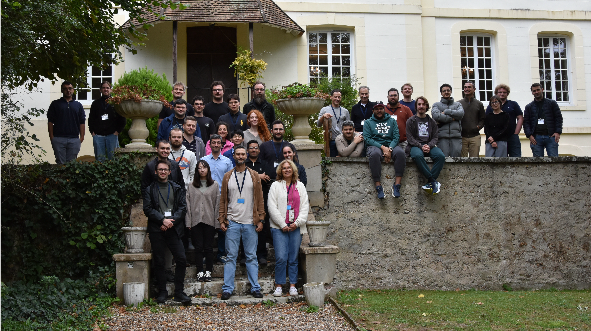
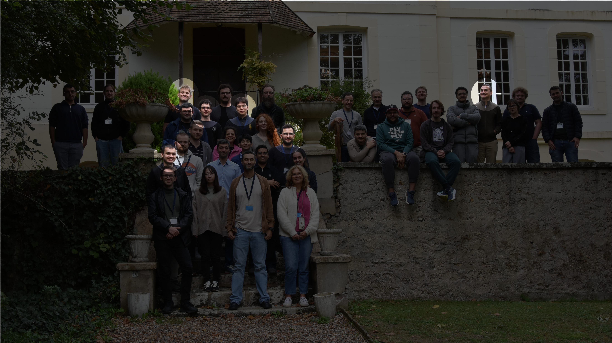
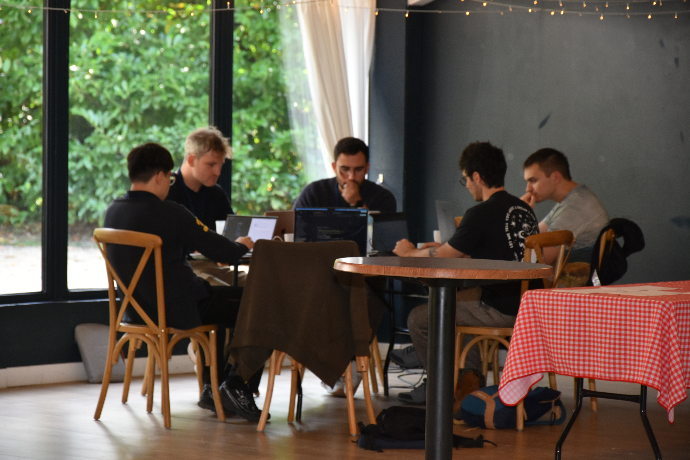

Plasma Pirates: Surrogate Models of PALLAS Simulations
Plasma-based electron accelerators
Simulations of PALLAS in SMILEI can guide experiments and provide physical insight, however runs are computationally intensive.
Central idea
Replace repeated high-fidelity simulation (1000s core-hours) runs with a fast, validated approximation (millisecond per run).
Plasma Pirates


Team Roles
- Mykyta: Model fine tuning & calibration
- Guillermo: MLOps
- Alex: Data exploration & modelling
- Hayg: AI’s human representative
- Sébastien: ML model development
- Keon: Bayesian surrogate modelling
From simulation to surrogate
Prediction tasks
- Campaign A: varying laser and gas settings
- Inverse: bunch properties → settings
- Direct prediction as a warm-up
- Campaign B: fixed laser parameters, varying gas profile and focus
- Direct: settings → final bunch properties
- Inverse: bunch properties → gas-profile settings
- Trajectories: bunch evolution along the accelerator
- Moments: bunch centroids, widths and charge at observation planes
Key questions: accuracy, data efficiency and generalisation beyond training conditions.
01
Accelerator settings
Laser, gas profile and focus position
02
PALLAS simulations
Particle-in-cell simulations with Smilei
03
Training and validation
Bunch properties, trajectories and moments
04
Surrogate models
Fast predictions for R&D
Data exploration
One pipeline, six steps
Every model in the team runs through the same path, whoever wrote it and wherever it trains: the notebook surrogate_pipeline.ipynb, the headless train.py, or a job on DALIA’s GPUs.
1Feature storeRead the PALLAS campaigns from Hopsworks rows 2Traced transformationsNormalisations and statistics stored in the feature view inputs · TD v 3TrainingAny models/*.py, on a laptop or on DALIA HPO trials 4Model registryModel, code, pins and metadata, linked to its view versions 5Benchmark & statusEvery registered model against the bar, live cases 6Hand-inBest model per case → CSV → organisers → W&B official scores
Hopsworks steps 1, 2, 4 and 5 · DALIA GB200 step 3 · W&B step 6
Click a step to jump to it. The figures in this section come from Hopsworks and W&B, snapshot taken .
1 · Pull the data from the feature store
- One name per objective. The case fixes the feature group, the row filter, the inputs and the targets.
- A versioned feature view. Every experiment and every teammate reads exactly the same rows.
- No CSV exported by hand. The views read the groups in place, so Inverse B is simply Direct B’s rows read the other way round.
2 · Transformations that travel with the data
Trajectory configurations by gas pressure, split as the Hard objective asks: train below the cut, score in-range and above-cut separately. Toggle the legend to isolate a group.
Stored in the feature view, not in a notebook
- Statistics come from training dataset v, over the inputs only, so the holdout’s targets cannot leak into them.
- A view version is immutable: other normalisations mean a new
FV_VERSION. - Splits take whole configurations: train, in-range and above-cut holdout. No simulation sits on both sides.
- Targets are scaled inside the model, so predictions return in physical units.
3 · Train any model, anywhere
Same steps as the notebook: view → split → fit → holdout → registry → CSV.
hpo.py on DALIA: TPE trials of MO_DeepOnet on 2 GPUs, scored on a validation cut of the training configurations (best ). The above-cut set is never seen; only the winner is retrained, scored once and registered.
4 · A self-contained model registry
- sj_trajectory_bayesian_nn v5
-
model.joblibfitted model -
bayesian_nn.pymodel code -
pallas_pipeline.pypipeline code -
pallas_score.pyscorer -
requirements.txtpinned versions -
model_meta.jsonprovenance

Each version is linked to its feature view and training dataset, so anyone can load it and reproduce the exact inputs.
Uploads to the team registry, hour by hour: per day, stacked by author, and per author. It plays on arrival; drag the slider or use Play/Pause, and hover a bar for its models.
5 · Benchmark straight from the registry
pp.model_benchmark(project, CASE): best version of each registered model against the bar; ★ = handed in (hover for per-target and official R²). Each author’s own holdout split: a guide, not a ranking.
5 · The team status page
Registry and W&B in one page, rebuilt every 2 minutes as a Streamlit app inside Hopsworks (status_app.py). Below: the page as it was on . Hopsworks ↗ W&B ↗
6 · Hand-in: export, score, publish
-
make_submission.pyloads the chosen version per case back from the registry and predicts the test file -
CSV +
manifest.jsonchecked against the test ids, fingerprinted with md5 - DALIAthe CSVs are copied to the organisers’ folder
-
Organisersrun
pallas_score.pyon the hidden test -
log_official_score.pytranscribes their score to W&B,–dry-runfirst - Status pagematches the run to its registry version and updates itself
official scores on the hidden test, published to W&B. Only the organisers compute them; our holdout only decides what to send.
Case study: TrajectoryB
TrajectoryB predicts the evolution of the beam parameters along the longitudinal direction for various settings.
The case was modelled using four different neural-network architectures:
Trajectory · what the model listens to
LIME weights of the six standardised inputs on each output (Sébastien Joly, explainability_data.csv). Blue pushes the output up, orange down. Click a column to rank its inputs.
- The laser focus
x_ofdominates the energy (−1.24, the largest weight on E). - Position
z_mmdrives energy, emittance and divergence: the bunch evolves along the cell. - Charge and spread depend on several knobs at once: no single input explains them.
Trajectory · beyond the training density
Official scores on the hidden test, per output: trained below P_max = 6 529 Pa, scored below (●) and above (◆) the cut. Pick a submission.
- The Bayesian MLP retrained on the Hard split loses 0.012 R² above the cut, the smallest gap of our four submissions.
- The bunch length σz is the output that suffers most out of distribution, for every model.
Trajectory · does the model know how wrong it is?
One simulation it never saw
1σ simulation inside the band: —
All 1,033 held-out simulations
- Every prediction comes with an error bar σ (MC dropout). Blue is the error the model announces, orange the error it makes.
- Lines together: the error bar can be trusted. Orange above blue: the model is over-confident.
- For σz the error bar is honest inside the training range; past the cut the real error is about 1.7× what the model announces (8.4 % vs 5.0 %).
Summary
A plain MLP is enough, mostly
0.98–0.99 R²
Inverse A, Direct B, trajectory: well-trained MLPs on standardised targets beat every bar; bigger or Bayesian models add ≤ 0.003
Out of distribution, structure helps
0.955 → 0.973
Above the density cut, ensembles, FiLM and Bayesian networks hold up better than a plain MLP
A billion times faster
~1 ms vs 250 core-hours
One configuration on one CPU core; the whole 2,882-config campaign in ~3 s
- Particles: a FiLM mixture trains in minutes and beats the reference Gaussian (1.44 vs 2.13), with error left to remove
- Hard inverse problems sometimes need several answers: a mixture recovers dip_frac (0.08 → 0.80)
Next steps
- Moments: the beam’s centre wiggles from side to side along the plasma (a betatron oscillation), and our models follow it only partly. Next: give the model the phase of this oscillation, computed from the physics, as an input
- Particles: the electron cloud shrinks and grows by a factor of up to 5,000 along the accelerator, which makes bigger models unstable to train. Next: rescale the cloud at each position separately, then train a larger model to close the gap to perfect (1.44 → 1)
- Real-time diagnostics: ~1 ms per prediction: fast enough to run beside the experiment and read the settings back from a measured bunch
Questions

Surrogate Models of PALLAS Simulations
Hayg Guler · Alexander Hill · Sébastien Joly · Keon Hee Kim · Mykyta Lenivenko · Guillermo Rodríguez Llorente
Bonus: Identifying possible outliers in trajectories
Static Hopsworks snapshot: use the dropdown to inspect one trajectory feature at a time.
How the method works
For every numeric trajectory input and target, the explorer applies two complementary univariate tests:
The two flags are combined with an OR. A row becomes a candidate outlier when at least one selected feature is flagged. The method identifies candidates; it does not delete rows automatically.
AISSAI Hackathon 2026 · Plasma Pirates